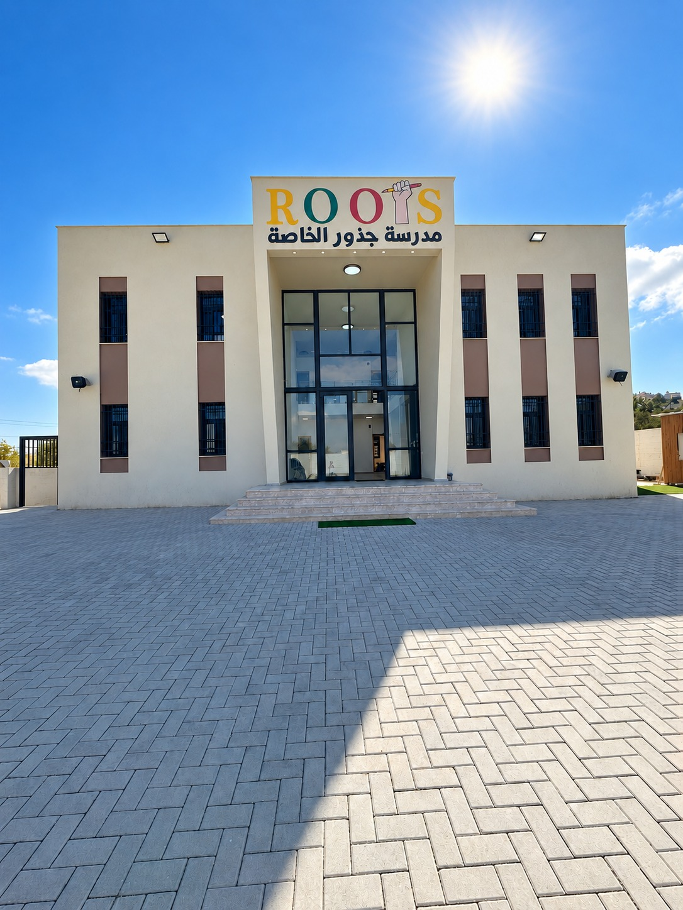
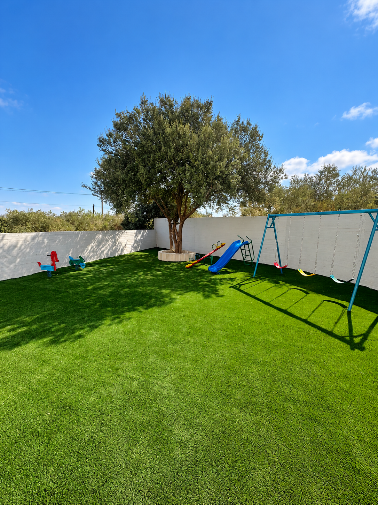

اللغة تفتح الآفاق.
اهتمام بتطوير مهارات الإنجليزية وثقة الطفل في استخدامها للتعلّم والتواصل.
مكان نتعلّم فيه، نكتشف، وننمو.

أهلًا بكم في Rootsبداية صغيرة، وإمكانات كبيرة.
في Roots، نريد للتعلّم أن يكون رحلة يعيشها الطفل بالفضول والتجربة والإبداع. نولي اهتمامًا باللغة الإنجليزية، وبالعلاقة الدافئة بين المعلمات والأطفال.
تعرّف على ما يميّزنا ↓نوفر المواصلات من كفل حارس وديرستيا وحارس وقيرة وزيتا وجماعين، لتسهيل وصول الأطفال إلى المدرسة.
المناطق والأسعار ↗مساحة للتعلّم، وعناية بكل خطوة.
أرقام واردة في خطة المدرسة؛ تُراجع قبل النشر.
التفاصيل الصغيرة تصنع فرقًا في يوم الطفل.
اهتمام بتطوير مهارات الإنجليزية وثقة الطفل في استخدامها للتعلّم والتواصل.
علاقة دافئة بين المعلمات والأطفال، ورعاية تدعم رحلتهم اليومية.
شاشة ومكيف في كل غرفة صفية، وغرفة حاسوب تدعم التجربة التعليمية.
رحلة Roots: اكتشف، تعلّم، ابتكر، انمُ.
كل سؤال بداية. نفتح المجال لفضول الطفل وملاحظاته.
نبني المعرفة بالتجربة والمشاركة، خطوة بخطوة.
نمنح الأفكار مساحة، والمحاولة قيمة.
مع كل تجربة، تنمو المهارات والثقة وحب التعلّم.

للطفولة مساحة هنا.
في ساحة المدرسة ومساحاتها الخارجية، نكتشف جانبًا آخر من التعلّم: الحركة، واللعب، والتفاعل مع الأصدقاء.
Learn with Roots
هنا سنعرض الفيديوهات التعليمية التي تنتجها Roots. ستتم إضافة المقاطع الحقيقية بعد تجهيزها، لتشاهدها وتختار ما تحب تعلّمه.
المكتبة قيد التجهيزحكاية المدرسة، من داخل يومها.
كل بداية تحتاج خطوة. تعرّفوا على إجراءات الانضمام إلى Roots.
كيف نسجّل؟ ↗كل ما تحتاجونه لبداية جديدة في جذور.
جاهزون للتسجيل؟ تواصلوا معنا لتأكيد التفاصيل وحجز المقعد.
تواصل عبر واتساب ↗نحب أن تبدأ الحكاية بالتعارف.